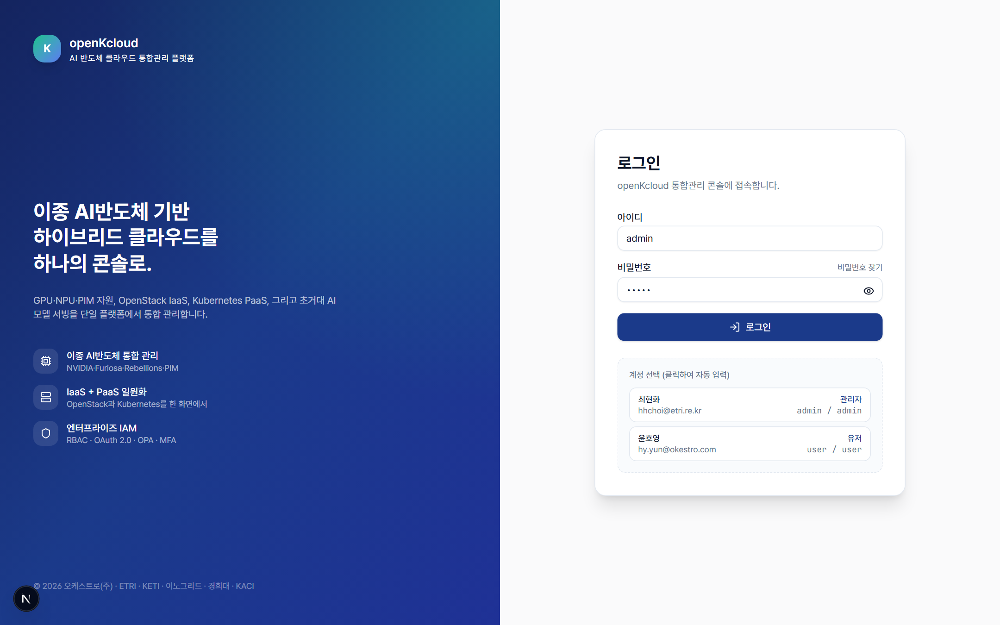
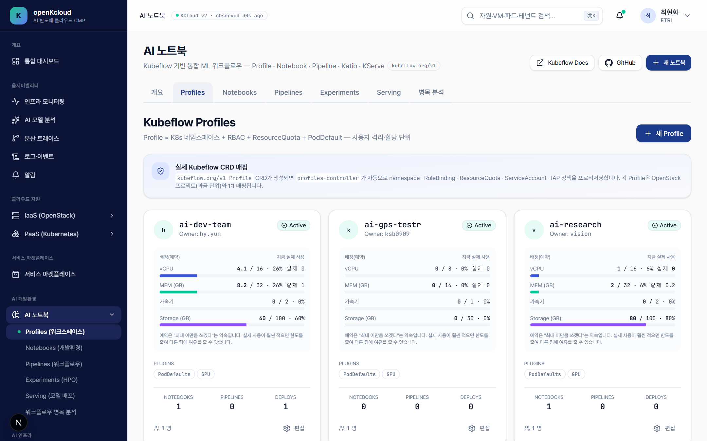
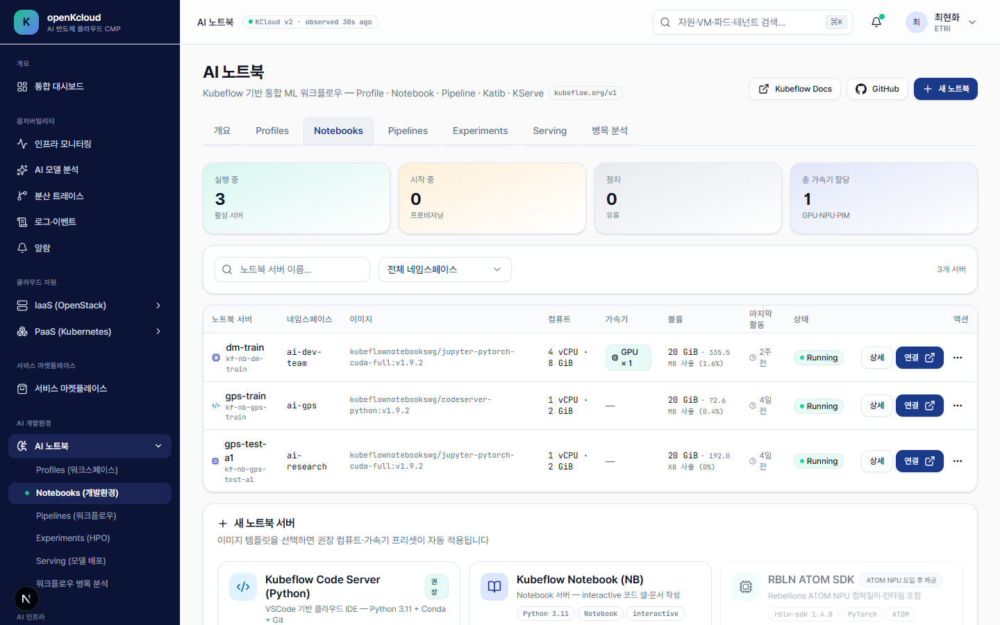
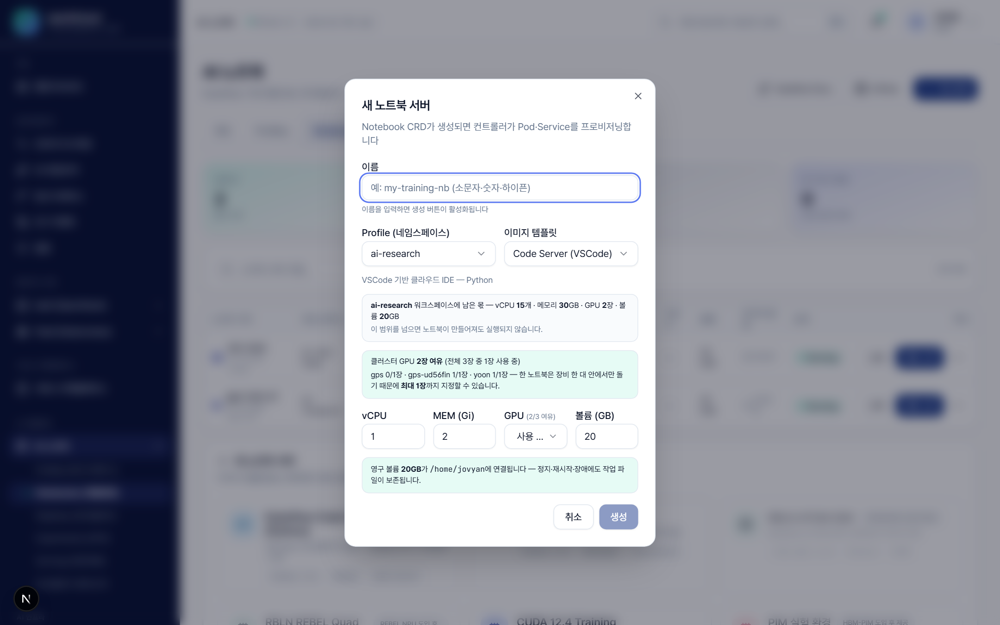
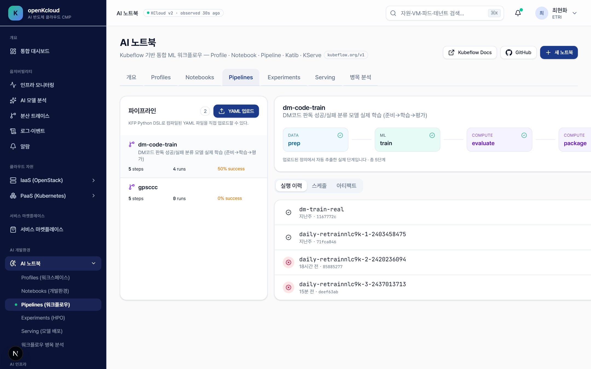
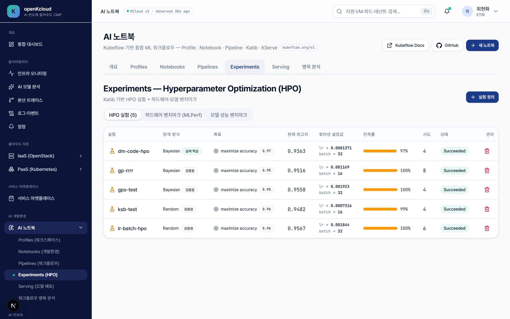
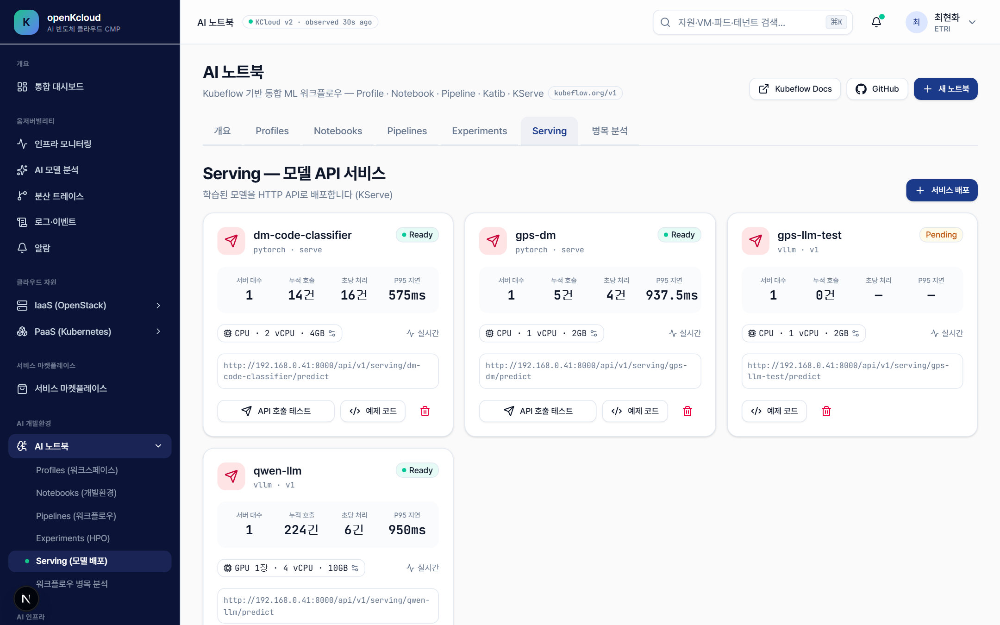
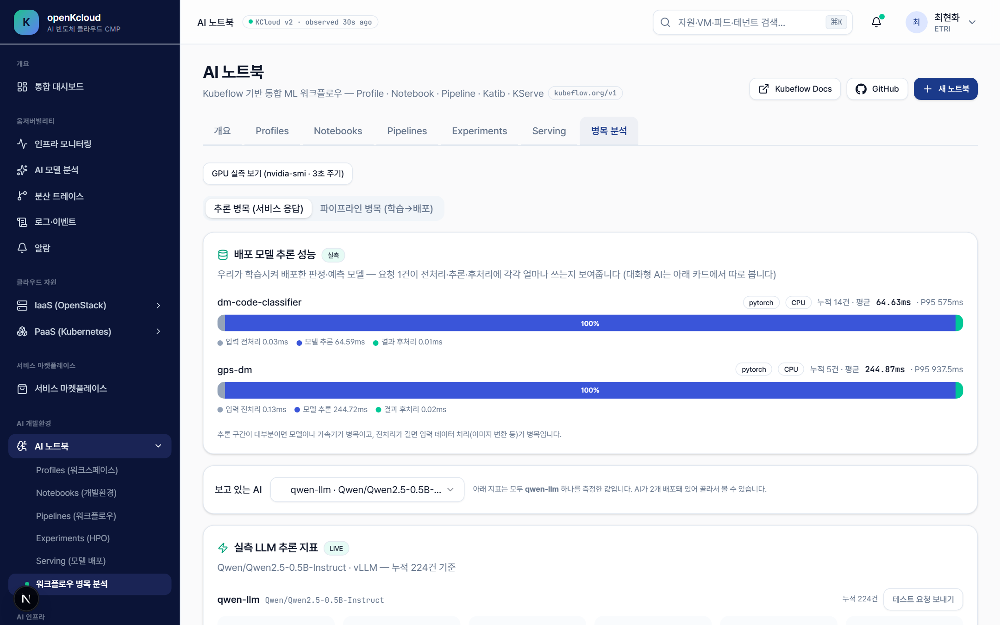

openKcloud · AI 개발환경
컴퓨터를 잘 몰라도 따라 할 수 있게 만들었습니다 · 2026-08
인터넷 브라우저로 접속해서 쓰는, 고성능 컴퓨터 작업실입니다.
AI를 만들려면 비싼 그래픽카드(GPU)가 달린 컴퓨터가 필요한데, 사람마다 그런 장비를 살 수는 없죠. 그래서 회사에 장비를 모아두고, 필요할 때 인터넷으로 빌려 쓰는 방식입니다. 내 노트북 성능이 낮아도 상관없습니다. 접속만 하면 되니까요.
| 메뉴 | 하는 일 |
|---|---|
| Profiles | 팀별 작업 공간과 사용할 수 있는 자원의 양을 봅니다 |
| Notebooks | 개발환경을 만들고 접속합니다 (가장 많이 쓰는 메뉴) |
| Pipelines | 반복 작업을 자동으로 돌립니다 |
| Experiments | AI 설정값을 기계가 대신 찾아줍니다 |
| Serving | 완성한 AI를 서비스로 띄웁니다 |
| 병목 분석 | 장비 상태와 속도를 확인합니다 |
http://192.168.0.41:3000 을 입력합니다.
http://localhost:3000admin, 비밀번호 admin 을 넣고 로그인합니다.
AI 개발환경 → Profiles 를 누르면 팀별 카드가 보입니다. 카드 하나가 팀 하나입니다.

막대 그래프는 "배정받은 양 중에 지금 얼마나 쓰고 있는지"를 보여줍니다.
| 항목 | 뜻 |
|---|---|
| vCPU | 계산을 담당하는 두뇌의 개수 |
| MEM (GB) | 작업용 기억 공간 (책상 넓이라고 생각하세요) |
| 가속기 | GPU 개수 — AI 학습 속도를 좌우하는 핵심 장비 |
| Storage (GB) | 파일을 저장하는 창고 크기 |
카드의 "편집" 버튼을 누르면 팀에 배정된 자원(vCPU·메모리·GPU·저장공간)을 조정할 수 있습니다. 지금 쓰고 있는 양보다 적게 줄이려 하면 경고가 뜨고 저장이 막힙니다 — 먼저 노트북을 정지해 자리를 비워야 합니다.
AI 개발환경 → Notebooks 로 이동한 뒤, 오른쪽 위 "새 노트북" 버튼을 누릅니다.


| 항목 | 무엇을 넣나요 |
|---|---|
| 이름 | 영문 소문자·숫자·하이픈(-)만 됩니다. 예: my-work, test1
한글·대문자·띄어쓰기·밑줄(_)은 안 됩니다 |
| Profile | 내가 속한 팀을 고릅니다 |
| 이미지 템플릿 | 어떤 프로그램을 쓸지 고릅니다 (아래 표 참고) |
| vCPU / MEM | 잘 모르면 기본값 그대로 두세요 (2 / 4 정도면 충분) |
| GPU | AI 학습을 할 거면 1장, 아니면 "사용 안 함" |
| 볼륨(GB) | 반드시 20 이상! 아래 경고를 꼭 읽어주세요 |
미리 프로그램이 갖춰진 작업실을 고르는 것입니다. 식당으로 치면 한식 주방·양식 주방처럼 도구가 세팅된 주방을 고르는 것과 같습니다. 빈 컴퓨터를 받아 하나씩 설치할 필요가 없습니다.
| 이름 | 어떤 작업실인가 | 이럴 때 고르세요 |
|---|---|---|
| Code Server (VSCode) |
VSCode를 웹 브라우저로 쓰는 환경. 파일 단위로 코드를 쓰고 고칩니다 |
일반 프로그램 개발. 편집기가 익숙한 분 |
| JupyterLab (SciPy) |
코드를 칸(셀) 단위로 실행하며 결과를 바로 확인하는 환경 | 데이터를 들여다보고 분석·실험할 때 |
| JupyterLab PyTorch CUDA |
위와 같되 AI 학습 도구가 전부 포함 (PyTorch · CUDA) |
GPU로 AI를 학습시킬 때 |
| RBLN ATOM / REBEL / PIM | 국산 AI 반도체용 | 장비가 도입되면 사용 가능 |
dm-train 노트북이 이것을 씁니다)세 번째는 무겁습니다. 프로그램이 많이 들어 있어 처음 만들 때 5분 이상 걸릴 수 있습니다. 같은 장비에서 이미 한 번 받았다면 다음부터는 바로 뜹니다. 화면에서 템플릿을 고르면 아래에 이런 안내가 나옵니다 — "GPU 학습용 — PyTorch + CUDA (이미지 큼, 최초 생성 오래 걸림)"
고르는 기준을 한 줄로 — AI 학습이면 PyTorch CUDA, 데이터만 볼 거면 SciPy, 일반 코드 작업이면 Code Server입니다.
생성을 누르면 목록에 나타납니다. 상태가 Starting(준비 중) → Running(사용 가능)으로 바뀝니다.
Running 인지 확인합니다.왼쪽 파일 목록의 빈 곳에 파일을 끌어다 놓으면(드래그) 업로드됩니다. 사진처럼 파일이 아주 많다면 압축(zip)해서 올린 뒤 풀어 쓰는 게 훨씬 빠릅니다.
압축을 풀려면 화면 위 메뉴에서 File → New → Terminal 을 열고 이렇게 입력합니다:
unzip -q 파일이름.zip
실제 사례로 설명합니다. 부품에 찍힌 코드 사진을 보고 "이 코드가 잘 읽힐지 아닐지"를 판정하는 AI를 만든 과정입니다.
성공 폴더 3,636장 / 실패 폴더 2,015장
EPOCHS 값을 5 → 20으로) ②사진을 더 모으기.
특히 실패 사례 사진이 많을수록 불량을 놓치지 않게 됩니다.노트북 목록에서 오른쪽 끝 ⋯ (점 세 개) 버튼을 누르면 메뉴가 나옵니다.
| 메뉴 | 하는 일 | 알아둘 점 |
|---|---|---|
| 정지 | 잠시 멈춤 (자원 반납) | 볼륨이 있으면 파일은 그대로 남습니다 |
| 시작 | 정지한 것을 다시 켬 | — |
| 볼륨 스냅샷 | 작업 파일을 통째로 백업 | 실수로 지웠을 때 되돌리기로 복구 |
| 리소스 변경 | CPU·메모리·GPU 늘리거나 줄이기 | 노트북이 한 번 재시작됩니다 |
| 삭제 | 노트북 없애기 | 확인 창이 두 번 뜹니다 — 두 번째 창에서 볼륨(데이터)을 남길지, 완전히 지울지 선택합니다. 남기면 같은 이름으로 다시 만들 때 파일이 복구되지만, 워크스페이스 저장 몫은 계속 차지합니다 |
노트북이 왜 안 뜨는지, 어떤 장비에서 도는지, GPU를 얼마나 쓰는지 확인할 수 있습니다. 노트북 목록에서 이름을 클릭하면 상세 화면이 열립니다.
노트북이 만들어지는 과정의 실제 기록입니다. 준비 중에서 안 넘어갈 때 여기를 보면 이유를 알 수 있습니다 (자리 배정 대기, 프로그램 내려받는 중 등).
맨 위에 어느 컴퓨터(노드)에서 도는지, 언제 시작했는지가 나오고,
아래에는 프로그램에 전달된 설정값들이 표시됩니다.
비밀번호 같은 민감한 값은 •••••• 로 가려집니다.
"연결"로 개발환경을 열면 오른쪽 세로 막대에 GPU 상태가 3초마다 갱신됩니다.
| 표시 | 뜻 |
|---|---|
| GPU 활용률 | 지금 GPU가 일하는 정도. 학습을 돌리면 90%대로 치솟습니다 |
| VRAM | GPU 전용 메모리 사용량. 꽉 차면 학습이 실패할 수 있습니다 |
| 온도 · 전력 | 장비 상태. 열심히 일할수록 올라갑니다 |
AI를 만들기만 하면 나 혼자만 쓸 수 있습니다. 다른 프로그램이 갖다 쓰게 하려면 "서비스"로 올려야 합니다.
순서는 이렇습니다:
Ready가 되면 완료. "API 호출 테스트" 버튼으로 확인할 수 있습니다.화면에서 어떤 항목을 고르는지, 자원을 어떻게 바꾸는지는 9장의 Serving 절에 자세히 있습니다. 학습이 끝나면 배포까지 자동으로 잇는 방법은 학습부터 서비스까지 한 번에를 보세요.
dm_serve.ipynb)을 따라 하면 순서대로 진행됩니다.Notebooks 목록에서 노트북 이름을 누르면 상세 화면이 열립니다. 네 부분으로 되어 있습니다.
① 맨 위 — 상태와 버튼
Running은 켜져 있다는 뜻입니다. 버튼 세 개가 있습니다.
| 개발환경 열기 | 실제 작업 화면(JupyterLab 등)을 새 탭으로 엽니다. 가장 많이 쓰는 버튼입니다 |
| 재시작 | 노트북을 껐다 켭니다. 프로그램이 멈췄을 때 씁니다. 작업 파일은 볼륨에 남습니다 |
| 정지 | 노트북을 내려 CPU·메모리·GPU를 반납합니다. 다른 사람이 쓸 수 있게 되고, 파일은 그대로 보존됩니다 |
② 왼쪽 — 리소스 사용량 그래프
이 노트북이 지금 얼마나 일하고 있는지 3초마다 그립니다. 민트색은 CPU, 남색은 메모리입니다.
| 단위 | 읽는 법 |
|---|---|
| mCore | CPU 1개 = 1000 mCore. 500이면 CPU 반 개를 쓰는 중 |
| MiB | 메모리 1GB ≈ 1024 MiB. 141이면 0.14GB |
선이 바닥에 붙어 있으면 정상입니다 — 켜두기만 하고 아무것도 안 돌리는 중이라는 뜻입니다. 학습 셀을 실행하면 CPU가 수천 mCore까지 치솟고 메모리도 함께 올라갑니다.
이 그래프로 자원을 너무 많이 잡았는지(배정 4개인데 계속 1 mCore면 낭비), 메모리가 부족한지(배정량 근처까지 오르면 곧 죽습니다) 판단할 수 있습니다.
③ 오른쪽 — 스펙 (이 노트북에 배정된 것)
| 이미지 | 어떤 프로그램이 미리 깔려 있는지 (예: jupyter-pytorch-cuda-full = PyTorch + CUDA 포함) |
| vCPU / 메모리 | 최대로 쓸 수 있는 양. 실제 사용량은 왼쪽 그래프와 비교해 보세요 |
| 볼륨 | 파일 보관함 크기. 여기에 저장한 것은 껐다 켜도 남습니다 |
| 네임스페이스 | 어느 팀 자원에서 차감되는지 |
④ 아래 — 탭 세 개
워크스페이스 — 노트북 안에 있는 파일과 폴더 목록입니다. 개발환경을 열지 않고도 무엇이 저장돼 있는지 확인할 수 있고, 파일을 내려받을 수도 있습니다.
Pod 이벤트 — "왜 안 뜨지?" 할 때 보는 곳입니다. 노트북이 만들어져서 실행되기까지의 기록이 시간순으로 남습니다. "장비 배정됨 → 이미지 내려받는 중 → 컨테이너 시작" 같은 내용이며, 문제가 있으면 이유가 여기 적힙니다(예: GPU 부족으로 대기 중, 이미지 다운로드 실패).
환경 변수 — 이 노트북이 어디서 어떻게 돌고 있는지를 보여줍니다.
| Pod | 이 노트북의 실행 단위 이름 (예: dm-train-0) |
| 노드 | 어느 장비에서 돌고 있는지. 볼륨도 이 장비에 만들어집니다 |
| Pod IP | 클러스터 안에서만 쓰는 내부 주소입니다. 브라우저에 쳐도 열리지 않고, 재시작하면 바뀝니다. 문제가 생겼을 때 어느 작업인지 추적하는 용도입니다 |
| 시작 시각 | 마지막으로 켜진 시각. 재시작하면 갱신됩니다 |
주소 체계가 헷갈릴 수 있어 정리하면 —
192.168.0.x는 PC의 실제 주소(건물 주소)이고,
10.42.x.x는 클러스터 내부 주소(건물 안 호실 번호)입니다.
가운데 숫자가 장비를 구분해서, 10.42.0.x와 10.42.1.x는 서로 다른 PC에서
도는 작업입니다.

지우기: 파이프라인을 고른 뒤 삭제 버튼을 누릅니다. 실행 기록이나 예약이 남아 있으면 몇 건인지 알려주고 한 번 더 물어봅니다. 함께 지우겠다고 하면 전부 정리됩니다.
"데이터 준비 → 학습 → 평가" 같은 여러 단계를 레시피로 등록해두고 버튼 하나로 실행합니다. 매일 새벽에 자동으로 다시 학습시키는 것도 가능합니다.
사용법: 목록에서 파이프라인을 고르고 "새 실행" → 실행 이력에서 진행 상황 확인.
파이프라인을 고르면 화면 위쪽에 진행 순서가 그림으로 나옵니다 (예: 데이터 준비 → 학습 → 평가). 업로드한 파일을 읽어 자동으로 그린 것이라 어떤 단계를 거치는지 한눈에 보입니다.
| 탭 | 하는 일 |
|---|---|
| 실행 이력 | 언제 돌렸고 성공했는지 기록 |
| 스케줄 | 자동 실행 예약 — 매일 새벽 2시처럼 정해진 시각에 사람 없이 실행. 주기를 고르고 "예약 추가"를 누르면 됩니다. 등록한 예약은 중지·재시작·삭제할 수 있습니다 |
| 아티팩트 | 실행하며 만들어진 결과 파일. 클릭해서 내려받을 수 있습니다 |
맨 위 "YAML 다운로드"를 누르면 파이프라인 정의 파일을 받을 수 있습니다 (다른 사람에게 전달하거나 수정할 때 사용).

지우기: 실험 목록 오른쪽 휴지통 버튼입니다. 그 실험이 돌린 시도(Trial) 기록도 함께 사라집니다.
AI 성능은 "학습률·배치 크기" 같은 설정값에 크게 좌우됩니다. 원래는 사람이 하나씩 바꿔가며 시험해야 하는데, 시스템이 여러 조합을 자동으로 시험해 가장 좋은 값을 찾아줍니다.
같은 화면의 다른 탭에서는 장비 성능 비교표도 볼 수 있습니다 (어떤 GPU가 더 빠른지).
AI를 학습시킬 때 사람이 미리 정해줘야 하는 값들이 있습니다. "한 번에 몇 장씩 볼까", "얼마나 큰 보폭으로 배울까" 같은 것들인데, 이 값에 따라 완성된 AI의 정확도가 크게 달라집니다.
문제는 정답이 정해져 있지 않다는 점입니다. 데이터마다 다르고, 해봐야 압니다. 그렇다고 사람이 값을 바꿔가며 수십 번 학습시킬 수는 없습니다.
HPO(하이퍼파라미터 최적화)가 그 일을 대신합니다. "이 범위 안에서 찾아봐"라고 알려주면 시스템이 조합을 바꿔가며 학습을 반복하고, 가장 성적이 좋은 조합을 찾아냅니다. 밤새 돌려놓고 아침에 결과만 보면 됩니다.
먼저 — 찾으려는 값이 무엇인가 (lr, batch)
HPO가 찾아주는 대표적인 두 값입니다. AI를 가르칠 때의 "학습 방식"을 정하는 손잡이라고 보시면 됩니다.
| 값 | 뜻 | 작으면 | 크면 | 보통 범위 |
|---|---|---|---|---|
| lr (학습률) |
틀렸을 때 한 번에 얼마나 크게 고칠지 | 조금씩만 고쳐 느리다 시간 안에 답에 못 닿을 수 있음 |
크게 고쳐 정답을 지나친다 이리저리 헤맴 |
0.0001 ~ 0.01 |
| batch (배치 크기) |
몇 장씩 묶어 보고 고칠지 | 자주 고쳐 섬세하지만 느리고 사진 한 장에 휘둘리기 쉬움 |
안정적이고 빠르지만 GPU 메모리를 많이 쓴다 |
16 / 32 / 64 |
골프에 비유하면 — 학습률은 스윙의 세기입니다.
너무 세게 치면 홀을 지나치고, 너무 살살 치면 홀까지 못 갑니다.
시험공부에 비유하면 — 배치 크기는 몇 문제씩 풀고 채점할지입니다.
한 문제마다 채점하면 꼼꼼하지만 오래 걸리고,
50문제씩 몰아서 채점하면 빠르지만 놓치는 게 생깁니다.
이 두 값에는 정답이 없습니다. 데이터마다 다르고 해봐야 압니다.
그래서 사람이 감으로 정하는 대신 HPO에게 맡기는 것입니다.
(예: lr=0.000583, batch=32 — "아주 조심스럽게 조금씩 고치고,
사진 32장씩 묶어서 본다"는 뜻입니다.)
장비가 바뀌면 이 값도 다시 찾아야 하나요?
둘의 성격이 다릅니다.
| 값 | 장비 영향 | 설명 |
|---|---|---|
| lr (학습률) | 없음 | 데이터와 모델이 정합니다. 좋은 장비로 옮겨도 최적값은 그대로입니다 |
| batch (배치 크기) | 있음 | 한 번에 올릴 사진 수라서 GPU 메모리가 한계입니다. 메모리를 넘기면 학습이 죽습니다 |
장비별로 올릴 수 있는 배치 크기가 다릅니다 (대략적인 기준):
| 가속기 | 메모리 | 배치 크기 |
|---|---|---|
| RTX 4070 | 8GB | 32 ~ 64 |
| RTX 4080 | 16GB | 64 ~ 128 |
| A100 | 40GB 이상 | 256 이상 |
중요한 점: 배치 크기를 바꾸면 최적 학습률도 함께 움직입니다. 한 번에 많이 볼수록 판단이 안정적이라 더 큰 보폭으로 고쳐도 되기 때문입니다. 그래서 두 값은 따로 찾으면 안 되고 함께 찾아야 합니다 — HPO가 두 개를 같이 탐색하는 이유입니다.
정리하면, 더 좋은 장비로 옮겼다면 배치 후보를 그 장비에 맞게 넓힌 뒤 HPO를 다시 돌리는 것이 좋습니다. 큰 배치로 학습하면 같은 데이터를 훨씬 빨리 배웁니다.
화면의 항목들
| 항목 | 무슨 뜻인가 | 예시 |
|---|---|---|
| 실험 이름 | 이 탐색 작업의 이름 (소문자·숫자·하이픈) | dm-tuning-v1 |
| 실행 워크스페이스 | 어느 팀 자원으로 돌릴지 | ai-research |
| 탐색 알고리즘 | 어떤 방식으로 찾을지 (아래 설명) | Bayesian |
| 최대 시도 횟수 | 몇 번까지 학습을 반복할지 | 6 |
| 목표 유형 | 높일 것(Maximize)인가 낮출 것(Minimize)인가 | Maximize |
| 메트릭 | 무엇을 기준으로 좋고 나쁨을 판단할지 — 목록에서 고릅니다(accuracy·loss·f1·precision·recall·auc 등). 고르면 목표 유형이 자동으로 맞춰집니다(loss는 낮출수록 좋으므로 Minimize) | accuracy(정확도) |
| 목표값 | 여기 도달하면 그만해도 되는 값 | 0.95 |
목표값에 먼저 도달하면 최대 횟수를 다 채우지 않고 멈춥니다. 반대로 끝까지 못 미치면 최대 횟수까지만 하고 그중 최선을 알려줍니다.
헷갈리기 쉬운 점 — "학습 알고리즘"과는 다릅니다
둘 다 "알고리즘"이라 헷갈리지만 하는 일이 완전히 다릅니다. 탐색 알고리즘은 학습을 시키지 않습니다. 학습에 넣을 값을 고를 뿐이고, 실제 학습은 그 안에서 따로 이뤄집니다.
| 이름 | 하는 일 | 예 | |
|---|---|---|---|
| 바깥 | 탐색 알고리즘 (여기서 고르는 5종) |
어떤 설정값을 시험해볼지 고른다 | Bayesian, TPE, Random, Grid, Hyperband |
| 안 | 최적화 알고리즘 | 신경망 가중치를 조금씩 고쳐 실제로 학습시킨다 | AdamW, SGD, RMSprop |
그림으로 보면 이렇게 반복됩니다:
Bayesian이 고른 값 → 학습 1회(AdamW) → 정확도 95.6%
↓ 결과를 보고 다음 값을 고름
Bayesian이 고른 값 → 학습 1회(AdamW) → 정확도 93.2%
↓
Bayesian이 고른 값 → 학습 1회(AdamW) → 정확도 96.8% ← 최고
학습은 매번 같은 방식(AdamW)으로 하고, 바뀌는 것은 넣는 값뿐입니다. 그래서 탐색 알고리즘은 어떤 종류의 AI에든 똑같이 쓸 수 있습니다 — 이미지 판별 모델이든, 언어 모델이든 상관없습니다.
참고: 이 시스템에서 만든 DM코드 판정 모델은 ResNet18 구조에 AdamW로 학습했고, 학습률·배치 크기는 사람이 정해서 한 번만 돌렸습니다. HPO를 쓰면 그 값까지 시스템이 찾아줍니다.
탐색 알고리즘 5가지 — 쉽게 말하면
보물찾기에 비유하면 이해가 쉽습니다. 넓은 운동장에 보물이 묻혀 있고, 땅을 팔 수 있는 횟수는 정해져 있습니다. 어디를 팔지 정하는 방법의 차이입니다.
| 방법 | 어떻게 찾나 | 언제 쓰나 |
|---|---|---|
| Bayesian Optimization |
판 자리의 결과를 보고 유망해 보이는 쪽으로 좁혀갑니다. "여기 근처가 따뜻하네" 하며 다가가는 방식 | 대부분의 경우 권장. 적은 횟수로 좋은 답을 찾습니다 |
| TPE | Bayesian과 비슷하되, 잘 나온 자리와 못 나온 자리를 나눠 잘 나온 쪽을 닮은 곳을 우선 팝니다 | 찾을 값이 많을 때(5개 이상) Bayesian보다 나은 편 |
| Random Search |
아무 데나 무작위로 팝니다. 단순합니다 | 어디부터 봐야 할지 감이 전혀 없을 때, 또는 빠르게 훑어볼 때 |
| Grid Search |
운동장을 격자로 나눠 빠짐없이 전부 팝니다 | 찾을 값이 2~3개로 적고 확실하게 훑고 싶을 때. 값이 많으면 경우의 수가 폭발해 오래 걸립니다 |
| Hyperband | 여러 자리를 조금씩만 파보고, 가망 없는 자리는 일찍 포기하고 유망한 자리에 힘을 몰아줍니다 | 학습 한 번이 오래 걸릴 때. 시간을 크게 아낍니다 |
고민되시면 Bayesian Optimization을 고르세요. 가장 무난합니다.
시도 횟수는 몇 번으로?
시도 횟수만큼 학습을 처음부터 다시 합니다. 학습 한 번이 1분이면
50회는 50분이고, 그동안 가속기(GPU)를 계속 씁니다.
처음에는 5~10회로 시작해 감을 잡고, 본격적으로 돌릴 때 늘리세요.
남들이 기다리는 상황이라면 특히 적게 잡는 것이 좋습니다.
결과는 어디서 보고, 어떻게 쓰나 (가장 중요)
Experiments 목록에 현재 최고치와 찾아낸 설정값이 함께 나옵니다. HPO의 진짜 결과물은 점수가 아니라 이 설정값입니다. 점수는 "이만큼 좋아졌다"는 확인일 뿐이고, 실제로 가져다 쓰는 것은 값입니다.
| 실험 | 최고 정확도 | 찾아낸 설정값 |
|---|---|---|
| lr-batch-hpo | 95.67% | lr = 0.001844 · batch = 32 |
| ksb-test | 94.82% | lr = 0.000732 · batch = 16 |
위 예에서 lr(학습률) 0.001844, batch(배치 크기) 32가 가장 좋은 조합입니다. 이 값을 학습 코드에 그대로 넣으면 됩니다:
optimizer = torch.optim.AdamW(model.parameters(), lr=0.001844) # ← 찾은 값 train_dl = DataLoader(train_ds, batch_size=32, shuffle=True) # ← 찾은 값
파이프라인으로 학습한다면 새 실행을 누를 때 파라미터에 같은 값을 넣으면 됩니다. 그러면 다음부터는 그 설정으로 학습됩니다.
결과를 읽을 때 주의할 점
두 실험을 비교해 보면 둘 다 학습률과 배치 크기를 찾았는데 답이 다릅니다. 시도 횟수(4회 vs 6회)와 운에 따라 달라지기 때문입니다. 시도 횟수가 적으면 "그중 최선"일 뿐 진짜 최선이 아닐 수 있습니다. 중요한 모델이라면 횟수를 늘려 다시 돌려보세요.
또한 찾은 값이 탐색 범위의 끝에 붙어 있으면 범위를 더 넓혀볼 필요가 있습니다. 예를 들어 학습률을 0.0001~0.01에서 찾았는데 결과가 0.0099라면, 더 큰 값이 좋을 수도 있다는 뜻입니다.

AI를 학습시키기만 하면 그 사람 컴퓨터 안에만 있습니다. 다른 프로그램이 갖다 쓰려면 서비스로 올려야 합니다. Serving 화면이 그 일을 합니다.
서비스 올리기
오른쪽 위 서비스 배포 → 이름을 정하고 → 배포할 모델을 목록에서 고르면 됩니다. 목록에는 바로 올릴 수 있는 모델만 나오므로 아무거나 골라도 됩니다. 모델을 고르면 종류(형식)는 자동으로 맞춰집니다. 1~2분 뒤 카드가 Ready로 바뀌면 준비 완료입니다.
잘 도는지 확인하기
카드의 API 호출 테스트를 누르면 시스템이 알맞은 예시 데이터를 넣어 실제로 호출하고, 판정 결과와 걸린 시간을 보여줍니다. 이미지로 판정하는 AI면 실제 사진 한 장을 넣어 시험합니다.
자원 바꾸기 (CPU·메모리·GPU)
카드 안의 자원 표시 부분을 클릭하면 바꿀 수 있습니다. 응답이 느리면 가속기(GPU)를 1장 붙여보세요. 남는 GPU가 몇 장인지 그 자리에서 알려줍니다. 저장하면 새 설정으로 다시 뜨는데, 준비될 때까지 기존 서비스가 계속 응답하므로 끊기지 않습니다.
참고: 학습은 GPU가 필요하지만 추론(판정)은 CPU로도 충분한 경우가 많습니다. GPU가 부족하면 서비스는 CPU에 두고 학습에 양보하는 편이 낫습니다.
서비스 내리기
카드의 휴지통 버튼입니다. 그 주소로 호출하던 프로그램이 있으면 즉시 실패하게 되니 확인 후 지우세요.
파이프라인에 포장·배포 단계를 넣어두면, 학습이 끝나는 즉시 서비스까지 자동으로 갱신됩니다. 사람이 파일을 옮기거나 서버에 올릴 필요가 없습니다. 예약(스케줄)까지 걸어두면 밤사이 새 데이터로 다시 학습하고, 아침엔 더 나아진 AI가 현장에 올라가 있습니다.
가장 많이 헷갈리는 부분입니다. 먼저 알아두실 규칙이 두 가지 있습니다.
규칙 1 — GPU는 쪼갤 수 없습니다
CPU는 "0.5개"처럼 잘게 나눠 여러 사람이 함께 쓸 수 있지만, GPU는 1장이 최소 단위입니다. 한 노트북이 GPU를 받으면 그 장을 통째로 독점합니다. 쓰지 않고 놀고 있어도 다른 사람은 못 씁니다.
규칙 2 — 하나의 작업은 장비 한 대 안에서만 돕니다
노트북 하나에 배정되는 CPU·메모리·GPU는 모두 같은 장비 것입니다.
이 PC에서 GPU를 빌리고 저 PC에서 CPU를 빌리는 식은 되지 않습니다.
그래서 장비마다 GPU가 1장씩인 지금 환경에서는, 클러스터 전체에 2장이 남아 있어도
"GPU 2장짜리 노트북"은 만들 수 없습니다. 화면에서도 고를 수 없게 막아두었고,
장비별 여유가 함께 표시됩니다.
그럼 팀원이 5명이면 GPU도 5장 필요한가요?
아닙니다. AI 개발자가 GPU를 실제로 쓰는 시간은 하루의 10~20% 정도입니다. 나머지는 코드를 쓰고, 데이터를 살펴보고, 결과를 분석하는 시간이라 CPU면 충분합니다. (예: 이 시스템에서 DM코드 판정 AI 학습에 걸린 시간은 34초였습니다.)
문제는 노트북에 GPU를 붙여두면 놀아도 계속 붙잡고 있다는 점입니다. 그래서 실무에서는 이렇게 씁니다:
| 무엇을 | 어떻게 | 이유 |
|---|---|---|
| 코드 작성·데이터 확인 | 노트북은 CPU로 | GPU가 필요 없는 작업 |
| 모델 학습 | 파이프라인으로 제출 | 돌 때만 GPU를 잡고 끝나면 즉시 반납 |
| 학습 코드 디버깅 | 그때만 노트북에 GPU | 대화형으로 만져야 할 때 |
이렇게 하면 GPU 2장으로 팀원 여러 명이 충분히 씁니다. 동시에 학습을 걸어도 2개씩 돌고 나머지는 줄을 서는데, 학습 한 번이 수십 초~몇 분이라 순번이 금방 돌아옵니다. 기다리는 동안 화면에는 "대기 중"으로 표시되며, 자리가 나면 자동으로 시작됩니다. 실패가 아닙니다.
GPU를 붙였다 뗐다 하려면
노트북은 ⋯ → 리소스 변경, 서비스는 카드의 자원 표시를 클릭해서 GPU 수를 바꾸면 됩니다. 노트북은 재시작되지만 작업 파일은 그대로 유지됩니다. 학습이 끝났다면 GPU를 0으로 돌려 다른 사람이 쓸 수 있게 해주세요.
한 장을 여러 명이 나눠 쓸 수는 없나요
지금 장비(RTX 계열)에서는 어렵습니다. 다만 A100·H100 같은 서버용 GPU가 들어오면 한 장을 최대 7개로 쪼개어 각각 독립적으로 쓸 수 있습니다(MIG). 그때는 장비 한 대로 팀 전체가 동시에 쓸 수 있습니다.
지금 누가 GPU를 쓰고 있는지 보려면
노트북을 새로 만들 때 창에 누가 몇 장을 쓰는 중인지 표시됩니다. 병목 분석 화면 맨 위에서는 장비별 GPU 사용률·온도·전력이 실시간으로 보입니다.

맨 위에 GPU 상태가 실시간으로 나옵니다 (사용률·온도·전력). 학습을 돌리면 숫자가 올라가는 걸 볼 수 있습니다. 그 아래에는 AI 서비스의 응답 속도, 파이프라인에서 어느 단계가 가장 오래 걸리는지가 표시됩니다.
병목 분석 화면에서 대화형 AI를 고르면 여섯 가지 숫자가 나옵니다. AI가 답을 만드는 과정을 나눠서 잰 값입니다.
| 항목 | 무엇을 재나 | 왜 중요한가 |
|---|---|---|
| TTFT Time To First Token |
첫 글자가 나오기까지의 시간 | 사용자가 체감하는 속도. 전체 시간보다 이게 짧아야 빠르게 느낍니다 (챗봇이 글자를 하나씩 흘려보내는 이유) |
| TPOT Time Per Output Token |
토큰 하나 더 만드는 시간 | 답이 길수록 시간이 비례해 늘어납니다 |
| E2E 지연 End-to-End |
질문부터 답을 다 쓰기까지 전체 | TTFT + (TPOT × 토큰 수) 로 계산됩니다 |
| 처리량 tokens/sec |
1초에 만들어내는 토큰 수 | 같은 답을 얼마나 빨리 쓰는지 |
| KV Cache | 앞서 읽은 내용을 재활용하려고 쌓아둔 공간의 사용률 | 90%를 넘으면 위험 신호. 자리가 없어 처리 중인 요청을 되돌리기 시작해 응답이 튑니다 |
| 처리 중 | 지금 답하고 있는 요청 수 | 0이면 아무도 안 쓰는 중, 쌓이면 대기가 생깁니다 |
KV Cache는 무엇을 재활용하나요
앞서 읽은 내용을 요약해둔 메모를 재활용합니다.
AI가 답을 쓸 때는 글자 하나를 만들 때마다 지금까지의 문맥 전체를 참고합니다. 30번째 글자를 쓰려면 질문과 앞서 쓴 29글자를 모두 봐야 합니다. 매번 처음부터 다시 읽으면 답이 길어질수록 급격히 느려집니다.
그래서 한 번 읽은 내용은 메모로 남겨둡니다. 다음 글자를 쓸 때는 처음부터 다시 읽지 않고 메모만 참고하고, 새로 추가된 글자 하나만 처리합니다. 그 메모 저장소가 KV Cache입니다.
KV는 Key-Value의 약자입니다. AI가 문맥을 기억하는 내부 형식의 이름인데, 쉽게는 "무엇을(Key) 어떻게(Value) 기억하는가"로 보시면 됩니다. Key는 "어느 대목인지 찾는 열쇠", Value는 "그 대목의 내용"에 해당합니다.
그래서 사용률이 왜 중요한가
메모는 GPU 메모리에 쌓이는데, 대화하는 사람마다 따로 필요합니다. 10명이 동시에 대화하면 10명분의 메모를 들고 있어야 합니다.
| 사용률 | 상태 |
|---|---|
| 0% | 아무도 대화하지 않는 중 |
| ~50% | 여유 있음 |
| 90% 이상 | 위험 — 자리가 없어 진행 중이던 대화를 강제로 되돌립니다. 사용자는 응답이 갑자기 튀거나 느려지는 것으로 느낍니다 |
그래서 병목 분석에서 이 값이 오르면 곧 느려진다는 예고로 읽습니다. 또한 문맥 길이(예: 2048토큰)를 크게 잡을수록 한 사람이 쓰는 메모가 커져 동시 접속 가능 인원이 줄어듭니다. 서비스를 배포할 때 정하는 그 값이 여기에 영향을 줍니다.
시스템 프롬프트 — 매번 앞에 붙는 지시문
챗봇에는 사용자 질문 앞에 보이지 않는 지시문이 항상 붙습니다. "너는 친절한 상담원이다. 한국어로 답하고, 모르면 모른다고 해라" 같은 내용인데, 이것을 시스템 프롬프트라고 합니다. AI의 말투와 역할을 정하는 설정입니다.
이 지시문은 모든 요청에 똑같이 붙기 때문에, 그 부분의 메모는 사람마다 새로 만들 필요가 없습니다. 한 번 만들어두고 여러 요청이 함께 쓰면 그만큼 빨라지고 메모리도 아낍니다. 이것을 프리픽스 캐시(prefix cache)라고 하며, 병목 분석의 Prefix 적중률이 그 재사용이 얼마나 잘 되고 있는지를 보여줍니다.
적중률이 높다는 것은 반복되는 앞부분을 잘 재활용하고 있다는 뜻이라 좋은 신호입니다. 시스템 프롬프트가 길수록 아끼는 효과도 커집니다.
토큰이 뭔가요 — 단어가 아닙니다
토큰은 AI가 글을 자르는 조각 단위입니다. 글자도 단어도 아닌 중간쯤입니다. 자주 쓰는 말은 통째로 한 조각, 드문 말은 여러 조각으로 쪼갭니다.
"hello" → 1토큰 (흔한 단어라 통째로) "unbelievable" → 3토큰 (un + believ + able) "안녕하세요! 어떻게 도와드릴까요?" = 17글자 → 12토큰 (실측)
한글은 1토큰이 약 1.4글자, 영어는 1토큰이 약 4글자(단어의 3/4)입니다. 같은 내용이라도 한국어가 토큰을 더 많이 씁니다.
토큰으로 세는 이유가 둘 있습니다. 비용 — 상용 AI 서비스는 토큰 수로 요금을 매기므로 한국어가 상대적으로 비쌉니다. 한계 — 실험·배포에서 정하는 "최대 문맥 길이 2048"이 토큰 기준이며, 한글로는 대략 3,000자까지 한 번에 다룰 수 있다는 뜻입니다.
실측 예시 읽어보기
TTFT 20.6ms · TPOT 4.52ms · E2E 157.2ms · 처리량 221 tokens/sec
질문을 던지면 0.02초 만에 첫 글자가 나오고, 답을 다 쓰는 데 0.16초 걸립니다. 1초에 한글 약 300자를 써 내려가는 속도로, 사람 타이핑(초당 5~6자)보다 50배 이상 빠릅니다.
Experiments 화면의 하드웨어 벤치마크 탭에서 벤치마크 실행 버튼을 누르면, 클러스터의 각 장비에서 실제로 계산을 돌려 성능을 잽니다. 아래는 실측 예시입니다.
| GPU | 노드 | FP32 | FP16 | 메모리 대역폭 | VRAM |
|---|---|---|---|---|---|
| RTX 4080 | gps | 33.11 | 105.15 | 545.5 GB/s | 17.2 GB |
| RTX 4070 Laptop | gps-ud56fin | 11.19 | 35.56 | 209.6 GB/s | 8.6 GB |
숫자가 무슨 뜻인가
| 항목 | 쉽게 말하면 | 왜 중요한가 |
|---|---|---|
| TFLOPS | 1초에 몇 조 번 계산하나 33 TFLOPS = 1초에 33조 번 |
AI 학습은 결국 엄청난 양의 곱셈입니다. 이 숫자가 클수록 학습이 빨리 끝납니다 |
| FP32 / FP16 | 숫자를 얼마나 정밀하게 다루나 FP32는 3.14159265, FP16은 3.14 정도 |
AI는 대충 계산해도 결과가 거의 같아 FP16을 주로 씁니다. 그래서 실제 AI 성능은 FP16 숫자를 보면 됩니다 |
| 메모리 대역폭 | 데이터를 얼마나 빨리 퍼오나 공장의 컨베이어 벨트 속도 |
계산이 빨라도 사진을 제때 못 가져오면 GPU가 놉니다 |
| VRAM | 한 번에 올릴 수 있는 작업대 크기 | 배치 크기와 모델 크기의 한계를 정합니다. 넘기면 학습이 죽습니다 |
그래서 실제로 얼마나 차이 나나
위 예에서 4080이 4070보다 AI 계산은 3배, 데이터 공급은 2.6배, 작업대는 2배 큽니다. 같은 학습을 시켰을 때 4080에서 34초 걸린 것이 4070에서는 100초쯤 걸립니다. 게다가 4070은 VRAM이 절반이라 큰 배치나 큰 모델은 아예 올릴 수 없습니다.
그래서 무거운 학습은 빠른 장비로 보내는 것이 좋고, 시스템도 자원이 맞는 장비를 자동으로 골라 배치합니다.
아래 MLPerf 표는 무엇인가
MLPerf는 AI 장비 성능을 재는 국제 공인 시험입니다. 자동차 연비를 공인 기준으로 재듯, 같은 조건에서 재야 장비끼리 비교가 되기 때문에 업계가 만든 표준입니다.
| 항목 | 뜻 | 어느 쪽이 좋은가 |
|---|---|---|
| Throughput (처리량) |
1초에 몇 개를 처리하나 | 많을수록 좋음 — 여러 명이 동시에 쓸 때 중요 (식당으로 치면 총 손님 수) |
| Latency (지연) |
하나 처리에 몇 밀리초 걸리나 | 적을수록 좋음 — 쓰는 사람의 체감 (내 음식이 나오는 시간) |
| TP / batch | 시험 조건. TP는 GPU 몇 장을 묶었는지, batch는 한 번에 몇 개씩 처리했는지 | 조건이 다르면 숫자도 달라지므로 함께 적습니다 |
예를 들어 H100은 A100보다 처리량 2.6배, 지연은 절반 이하입니다. 표에 쓰인 Llama-3.1 8B는 값이 80억 개인 언어 모델로, 이 시스템에서 쓰는 Qwen 0.5B보다 16배 큽니다.
다시 강조하면, 이 표는 우리가 잰 값이 아닙니다. A100·H100·Rebellions·Furiosa 장비가 이 클러스터에 없어 직접 잴 수 없고, 공개된 참고 수치입니다. 이종 가속기를 비교해 보여달라는 요구를 반영한 자료이며, 실측은 맨 위 "클러스터 GPU 실측 벤치마크" 카드뿐입니다.
앞의 가속기 벤치마크가 "장비가 얼마나 빠른가"였다면, 이 표는 "AI가 얼마나 잘 아는가"입니다. 사람으로 치면 컴퓨터 사양과 수능 점수의 차이입니다.
시험 종목
| 벤치마크 | 무엇을 재나 | 비유 |
|---|---|---|
| MMLU | 역사·법학·의학 등 57개 과목 상식 | 수능 전과목 |
| HumanEval | 프로그래밍 문제를 풀어 코드를 작성 | 코딩 실기시험 |
| GSM8K | 초등~중학 수준 수학 문장제 | 수학 서술형 |
"5-shot"은 시험 조건입니다. 문제를 풀기 전에 예시 5개를 미리 보여준다는 뜻으로, 아무 설명 없이 푸는 것(0-shot)보다 점수가 잘 나옵니다. 조건이 다르면 점수도 달라지므로 함께 적습니다.
Throughput은 무엇을 처리한 수인가 — 시험마다 다릅니다
이 표에서 가장 헷갈리는 부분입니다. 처리량이 세는 대상이 행마다 다릅니다. 그래서 화면에는 숫자 옆에 단위를 함께 표시합니다.
| 시험 종류 | 무엇을 세나 | 단위 |
|---|---|---|
| MLPerf Inference (추론 = 답하는 속도) |
1초에 만들어내는 토큰 수 | tokens/s |
| MLPerf Training (학습 = 가르치는 속도) |
1초에 학습하는 사진 수 (ResNet-50) 1초에 도는 학습 반복 횟수 (BERT-Large) | images/s steps/s |
예를 들어 A100의 3,421은 초당 토큰 3,421개를 만든다는 뜻이고, 아래쪽 A100 8장의 2,450은 초당 사진 2,450장을 학습한다는 뜻입니다. 세는 대상이 다르므로 두 숫자를 나란히 비교하면 안 됩니다.
추론과 학습은 성격이 다릅니다. 추론은 완성된 AI가 질문에 답하는 속도이고, 학습은 AI를 가르치는 속도입니다. 표에서 종류 칸으로 구분할 수 있습니다.
모델 이름 뒤의 B는 무엇인가
모델의 크기입니다. B는 Billion(십억)으로,
70B는 내부 값이 700억 개라는 뜻입니다.
클수록 똑똑하지만 그만큼 무겁고 큰 장비가 필요합니다.
| 모델 | 크기 | 필요한 GPU 메모리 | 우리 장비에서 |
|---|---|---|---|
| Llama-3.1 70B | 700억 | 140GB 이상 | 불가 (A100 여러 장 필요) |
| Qwen2.5-14B | 140억 | 약 28GB | 불가 (A100 1장 필요) |
| Qwen2.5-0.5B | 5억 | 약 2GB | 가능 — 지금 쓰는 모델 |
우리가 쓰는 0.5B 모델은 표의 70B보다 140배 작습니다. 그래서 답변 품질은 떨어지지만 작은 GPU에서도 돌아갑니다. A100 서버가 들어오면 표에 있는 급의 모델을 실제로 올릴 수 있습니다.
녹색 막대와 목표는 무엇인가
막대는 점수를, 옆의 목표는 합격선입니다. 막대가 목표선을 넘으면 그 시험을 통과한 것으로 봅니다.
이 표 역시 실측이 아닙니다. 제목의 "(참고 자료)"가 그 표시이며, 해당 모델들을 이 클러스터에 올릴 수 없어 공개된 점수를 옮겨 적은 것입니다. 우리 장비에서 직접 잰 값은 "클러스터 GPU 실측 벤치마크"와 "배포 모델 부하 테스트" 두 가지뿐입니다.
한 번 눌러서 잘 되는 것과, 여러 명이 한꺼번에 쓸 때 버티는 것은 다른 문제입니다. 현장에 넣기 전에 반드시 확인해야 합니다. Experiments 화면의 모델 성능 벤치마크 탭에서 서비스별 부하 테스트 버튼을 누르면 실제로 재봅니다.
"100회 동시 호출(동시성 10)"은 총 100번 요청을 보내되 한 번에 10개씩 몰아넣는다는 뜻입니다. 은행 창구 10개에 손님 100명이 줄 선 상황이라고 보시면 됩니다.
숫자 읽는 법
| 항목 | 뜻 | 판단 |
|---|---|---|
| RPS | 초당 처리 건수 | 많을수록 좋음 |
| p50 | 절반은 이 시간 안에 응답 | "보통 이 정도" |
| p95 | 100명 중 95명은 이 시간 안에 | 실제 체감에 가까움 |
| p99 | 가장 느렸던 경우까지 | 최악의 경험 |
| 오류율 | 실패한 비율 | 0%여야 정상 |
p50(보통값)만 보면 안 됩니다. 평균과 마찬가지로 아주 느렸던 몇 건을 숨기기 때문입니다. p95·p99까지 함께 봐야 실제 사용자 경험을 알 수 있습니다.
실측 예시
| 모델 | RPS | p50 | p95 | p99 | 오류율 |
|---|---|---|---|---|---|
| dm-code-classifier (CPU) | 25.7 | 361.6ms | 772.8ms | 875.4ms | 0.0% |
| qwen-llm (GPU) | 51.2 | 171.3ms | 400.9ms | 404.3ms | 0.0% |
둘 다 오류 0%입니다. 100번을 몰아쳐도 하나도 놓치지 않았다는 뜻이라 현장에 넣어도 되는 수준입니다.
판정 모델이 LLM보다 느린 것은 CPU로 돌기 때문입니다. 판정은 CPU로도 충분해서 그렇게 두었지만, 초당 25건으로 부족하다면 자원 변경에서 GPU를 붙여 크게 올릴 수 있습니다.
Q. 노트북이 계속 "준비 중"에서 안 바뀌어요
A. 상태 아래에 이유가 적혀 있습니다. 대부분 GPU 부족(다른 사람이 다 씀)이거나 이미지 다운로드 중(처음 쓰는 종류는 5분 정도 걸림)입니다. 이유를 읽고 대처하세요.
Q. 생성 버튼이 회색이라 눌리지 않아요
A. 이름이 규칙에 맞지 않아서입니다. 영문 소문자·숫자·하이픈만 쓸 수 있습니다. 빨간 글씨로 이유가 나옵니다.
Q. 올린 파일이 전부 사라졌어요
A. 볼륨 없이(0GB) 만든 노트북일 가능성이 큽니다. 새로 만들 때 볼륨을 20GB 이상으로 지정하세요. 이미 지나간 데이터는 복구가 어렵습니다.
Q. 개발환경 화면이 하얗게 비어 있어요
A. Ctrl+Shift+R 로 새로고침해 보세요. 그래도 안 되면 포털에서 로그아웃 후 다시 로그인하세요.
Q. 학습 중에 오류가 나면서 멈춰요
A. 메모리가 부족한 경우가 많습니다. ⋯ → 리소스 변경에서 MEM을 늘려보세요 (예: 4 → 8). 단, 노트북이 재시작됩니다.
Q. 실험을 등록했는데 "실패"라고 떠요
A. 이름 규칙 때문일 가능성이 큽니다. 노트북과 마찬가지로 영문 소문자·숫자·하이픈만
됩니다 (밑줄 _ 안 됨). 지금은 규칙에 맞지 않으면 빨간 글씨로 알려주고 버튼이 비활성화됩니다.
Q. 개발환경을 열었는데 "로그인이 필요합니다"가 반복돼요
A. 로그인만 하면 화면이 자동으로 열립니다(3초 이내). 그래도 안 되면 그 창을 새로고침(F5)하세요. 포털에 이미 로그인돼 있다면 보통 이 화면 자체가 나오지 않습니다.
Q. 서비스에 "API 호출 테스트"를 눌렀는데 실패해요
A. 서비스 상태가 Ready인지 먼저 보세요. 방금 배포했다면 1~2분 기다려야 합니다. Ready인데도 실패하면 모델 파일 구조가 그 형식과 맞지 않는 경우입니다. 형식을 바꿔 다시 배포해 보세요.
Q. 서비스 응답이 너무 느려요
A. 카드의 자원 표시를 눌러 가속기(GPU)를 1장 붙여보세요. 다만 GPU가 남아 있어야 하고, 없으면 자리가 날 때까지 기다립니다(그동안 기존 서비스는 계속 동작합니다).
Q. 예제 코드를 노트북에 붙여넣어 실행했더니 "Connection refused"가 나요
A. 주소가 localhost로 되어 있으면 실패합니다 — 노트북 안에서 localhost는
노트북 자기 자신을 가리키기 때문입니다. 서비스 화면의 예제 코드 버튼을 다시 눌러
복사하면 올바른 주소(http://192.168.0.41:8000/…)가 들어 있습니다.
Q. GPU가 남아 있다는데 내 노트북은 "GPU 부족"이라고 해요
A. 볼륨이 있는 노트북은 그 볼륨이 놓인 장비(노드)에서만 다시 켤 수 있습니다. 그 장비의 GPU 슬롯이 다 찼으면, 다른 장비에 GPU가 남아 있어도 못 씁니다. 그 장비의 GPU를 쓰는 워크로드를 잠시 정지하거나, GPU 없이 켜서 파일 작업만 하세요.
Q. GPU 한 장을 여러 명이 같이 쓸 수 있나요?
A. 네. GPU 한 장이 2개 슬롯으로 나뉘어 있어, 예를 들어 LLM 서비스와 학습 노트북이 같은 GPU를 나눠 쓸 수 있습니다. 다만 메모리는 나눠주지 않으므로 두 작업의 사용량 합이 GPU 메모리를 넘으면 오류가 납니다 — 대형 모델을 올릴 때는 같은 GPU를 쓰는 다른 작업을 확인하세요. 같이 쓰면 속도도 서로 영향을 받습니다.
Q. 노트북을 만들려는데 "저장 몫을 넘습니다"라고 막혀요
A. 예전에 지운 노트북들의 볼륨이 남아 몫을 차지하고 있을 가능성이 큽니다. 삭제할 때 "볼륨까지 완전 삭제"를 선택하지 않으면 볼륨은 계속 남습니다. 관리자에게 안 쓰는 볼륨 정리를 요청하세요.
Q. 남이 만든 노트북을 지워도 되나요?
A. 안 됩니다. 다른 사람의 작업이 사라집니다. GPU가 필요하면 그 사람에게 먼저 물어보세요.
| 용어 | 쉬운 설명 |
|---|---|
| 노트북 | 인터넷으로 접속하는 내 개발환경. 종이 노트가 아니라 작업실입니다 |
| GPU / 가속기 | AI 계산을 빠르게 해주는 특수 장비. 있으면 수십 배 빨라집니다 |
| 볼륨 | 파일을 보관하는 사물함. 없으면 껐다 켤 때 다 사라집니다 |
| Profile | 팀별 작업 공간. 쓸 수 있는 자원의 한도가 정해져 있습니다 |
| 이미지 / 템플릿 | 어떤 프로그램들이 미리 깔려 있는지 정해둔 꾸러미 |
| 학습(트레이닝) | AI에게 예시를 잔뜩 보여주며 규칙을 익히게 하는 과정 |
| 정확도 | AI가 얼마나 맞히는지. 100장 중 95장 맞히면 95% |
| 모델 | 학습이 끝난 AI 본체. 파일 하나로 저장·전달할 수 있습니다 |
| 배포 / Serving | 완성한 AI를 다른 프로그램이 쓸 수 있게 켜두는 것 |
| 토큰 | AI가 글을 자르는 조각 단위. 한글은 1토큰이 약 1.4글자 |
| TTFT | Time To First Token — 첫 글자가 나오기까지 걸린 시간 |
| TPOT | Time Per Output Token — 토큰 하나를 더 만드는 데 걸린 시간 |
| E2E 지연 | End-to-End — 질문부터 답 완료까지 전체 시간 |
| KV Cache | Key-Value Cache — 앞서 읽은 내용의 요약 메모를 쌓아둔 공간. Key는 "어느 대목인지 찾는 열쇠", Value는 "그 대목의 내용". 90%를 넘으면 응답이 느려지기 시작합니다 |
| 시스템 프롬프트 | 사용자 질문 앞에 항상 붙는 보이지 않는 지시문. AI의 말투와 역할을 정합니다 |
| 프리픽스 캐시 | 모든 요청에 똑같이 붙는 앞부분(시스템 프롬프트 등)의 메모를 여러 요청이 함께 쓰는 것. 적중률이 높을수록 좋습니다 |
| LLM | Large Language Model — 사람 말을 알아듣고 답하는 대형 언어 모델 |
| HPO | Hyperparameter Optimization — AI 설정값을 자동으로 찾아주는 기능 |
| lr (학습률) | Learning Rate — 틀렸을 때 한 번에 얼마나 크게 고칠지 |
| batch (배치) | 한 번에 몇 개씩 묶어 보고 고칠지. GPU 메모리가 한계를 정합니다 |
| epoch | 준비한 데이터를 처음부터 끝까지 한 번 다 보는 것. 5 epoch이면 5회 반복 |
| RPS | Requests Per Second — 1초에 처리하는 요청 수. 많을수록 좋습니다 |
| p50 / p95 / p99 | 응답 시간을 느린 순으로 줄 세운 값. p95는 "100명 중 95명은 이 시간 안에"라는 뜻 |
| TFLOPS | 1초에 몇 조 번 계산하는지. 장비 성능의 대표 지표 |
| FP32 / FP16 | 숫자를 다루는 정밀도. AI는 주로 FP16을 써서 더 빠릅니다 |
| VRAM | GPU의 작업대 크기. 올릴 수 있는 모델·배치 크기를 정합니다 |
| 레플리카 | 같은 서비스를 처리하는 서버 대수. 늘리면 더 많은 요청을 감당합니다 |
| 파이프라인 | 여러 단계를 정해진 순서로 자동 실행하는 작업 흐름 |
| 네임스페이스 | 팀별로 나눠놓은 공간. 자원 한도와 접근 권한이 팀마다 따로입니다 |
| Pod | 작업이 실제로 실행되는 단위. 노트북 하나가 파드 하나입니다 |
| Pod IP | 클러스터 안에서만 통하는 내부 주소. 재시작하면 바뀝니다 |
| 노드 | 클러스터에 묶인 컴퓨터 한 대 |
| mCore | CPU 사용량 단위. 1000 mCore = CPU 1개 |
| MiB | 메모리 단위. 1024 MiB ≈ 1GB |
| B (70B·0.5B) | 모델 크기. B는 Billion(십억). 70B는 내부 값이 700억 개라는 뜻이며 클수록 똑똑하지만 무겁습니다 |
| MMLU | 57개 과목 상식을 재는 시험. 수능 전과목에 해당 |
| HumanEval | 프로그래밍 실력을 재는 시험 |
| GSM8K | 수학 문장제를 재는 시험 |
| 5-shot | 문제를 풀기 전 예시 5개를 미리 보여주는 시험 조건 |
| AdamW | 학습 알고리즘의 한 종류. 신경망 가중치를 조금씩 고쳐 학습시킵니다. HPO의 탐색 알고리즘과는 다른 층입니다 |
| ResNet18 | 이미지를 판별하는 신경망 구조의 하나. DM코드 판정 모델이 이 구조를 씁니다 |
| MIG | Multi-Instance GPU — A100 등에서 GPU 한 장을 여러 개로 쪼개 각각 독립적으로 쓰는 기술 |
| prefix (프리픽스) | 요청마다 똑같이 앞에 붙는 부분. 시스템 프롬프트가 대표적이며, 이 부분의 계산 결과는 재사용됩니다 |
| API 호출 | 프로그램끼리 "이거 판정해줘" 하고 요청을 주고받는 방식 |
| 스냅샷 | 지금 이 순간의 작업 파일을 통째로 저장한 백업 |
| 파이프라인 | 여러 작업 단계를 자동으로 이어서 실행하는 레시피 |
| DAG | 파이프라인의 진행 순서를 그린 그림 (단계와 화살표) |
| 스케줄 / Cron | 정해진 시각에 자동 실행되도록 예약하는 것 |
| 아티팩트 | 실행하며 만들어진 결과물 파일 (모델·로그·지표 등) |
| Pod | 노트북이 실제로 돌아가는 실행 단위. "노트북의 알맹이" |